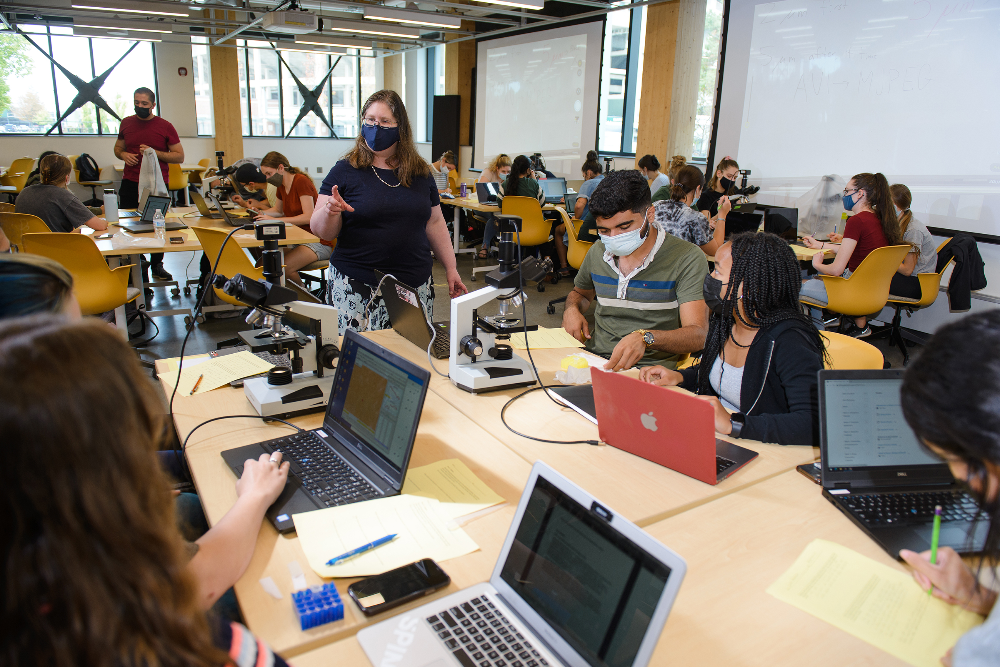

Studio Physics es un modelo docente de aprendizaje activo que integra clase, laboratorio y resolución de problemas en un único entorno de aprendizaje.

Aula de Studio Physics en Michigan State University, mostrando aprendizaje activo colaborativo con profesorado y asistentes docentes trabajando directamente con grupos de estudiantes.
En Michigan State University trabajé extensamente con enfoques de Studio Physics, contribuyendo al diseño e implementación de entornos de aprendizaje activo a gran escala para cursos introductorios de física. Este modelo reemplaza la enseñanza tradicional basada principalmente en clases magistrales por un aprendizaje colaborativo, basado en la indagación y centrado en el estudiante.
Combina clase, laboratorio y recitación en un único entorno donde el estudiantado participa activamente en la construcción de conceptos físicos.
El estudiantado trabaja en equipos para resolver problemas, realizar experimentos y desarrollar comprensión conceptual.
El trabajo en grupo fomenta la instrucción entre pares y una implicación más profunda con el material del curso.
La enseñanza se apoya en la investigación educativa y en procesos continuos de evaluación y mejora.
Contribuí al desarrollo e implementación de Studio Physics en MSU, incluyendo diseño curricular, formación de instructores y estrategias de evaluación. Mi trabajo se centró en mejorar la accesibilidad, la participación estudiantil y los resultados de aprendizaje en cursos de gran matrícula.
Studio Physics ha demostrado mejoras significativas en el rendimiento, la retención y la comprensión conceptual del estudiantado, especialmente en disciplinas STEM y ciencias de la vida.
El modelo Studio Physics se basa en enfoques docentes fundamentados en investigación desarrollados dentro de la comunidad de investigación en educación en física (Physics Education Research, PER).
Desarrollo original de Studio Physics en Rensselaer Polytechnic Institute.
Wilson, J. M. (1994–1997). The CUPLE/Studio Physics Project →
Student-Centered Active Learning Environment with Upside-down Pedagogies.
Metaanálisis a gran escala que demuestra mejoras en los resultados de aprendizaje en áreas STEM.
Freeman et al. (2014). Active learning increases student performance →
Trabajo fundamental sobre interacción, aprendizaje conceptual e instrucción entre pares.